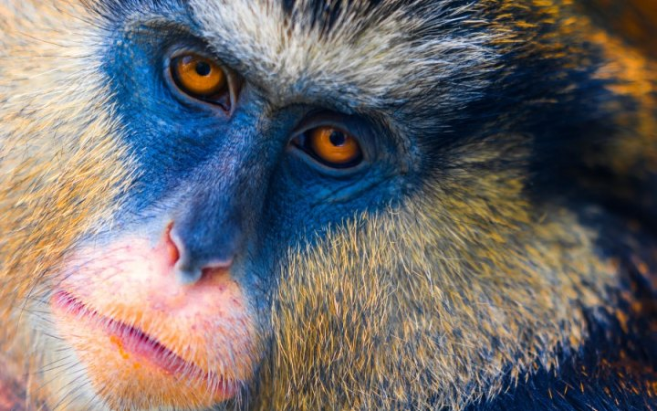
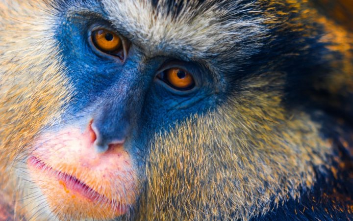

Let's talk about Monkeys...
There are many different things that come to mind when we think about Monkeys. They are often seen as being cute and highly intelligent animals. There are many different species that have their own characteristics in terms of size, color, location, and even their abilities. They are known for being good care givers to the young and even having some humanistic movements.
Monkeys are very vocal animals and that is their name way of communicating with each other. They give of different pitches to warm off danger, to call a mate, and even to communicate with their young. Even though the communication of Monkeys has long been studied, there is a great deal that we still don’t know about it.
There are 264 known species of Monkeys in the world. They are often included with Apes but they are very different. The main different is that the Apes don’t have a tail.
There are two categories – the New World and the Old World Monkeys. It is believed that they split through evolution approximately 40 million years ago.

 
